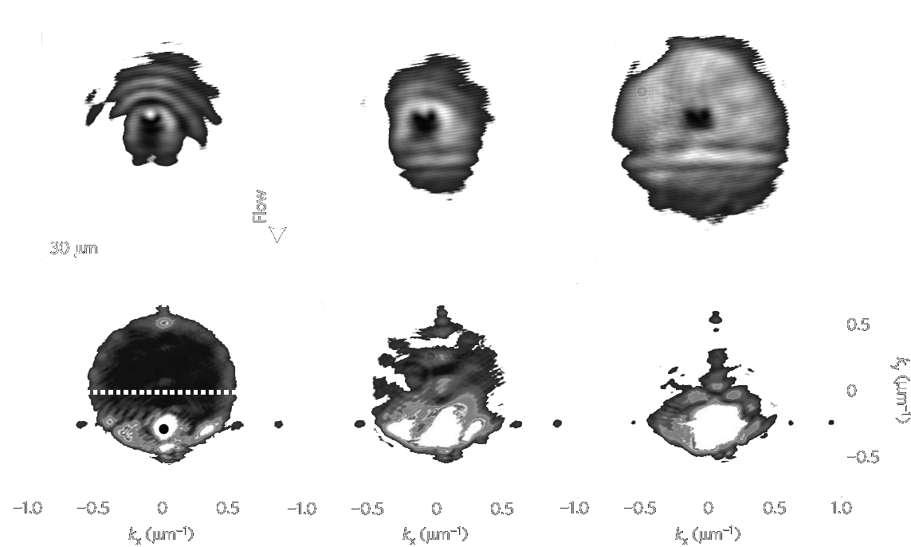
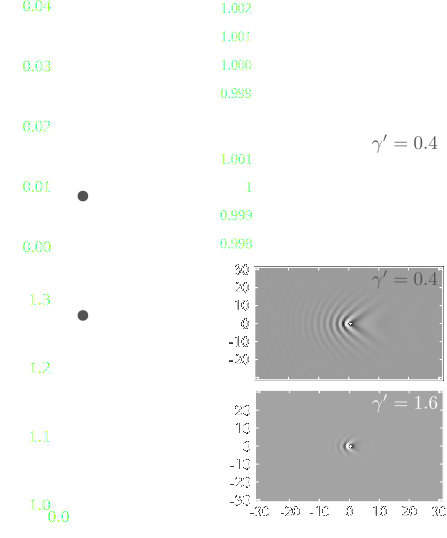

Scattering and topological properties of driven-dissipative quantum fluids
Andrei Ciprian Berceanu
I'm sorry; your browser doesn't support HTML5 video in WebM with VP8 or MP4 with H.264.




$H=\mathcal{H}_0+\frac{1}{2}\kappa \sum_{m,n}\left[(m-m_0)^{2}+(n-n_0)^{2}\right]\hat{a}_{m,n}^{\dagger}\hat{a}_{m,n}$